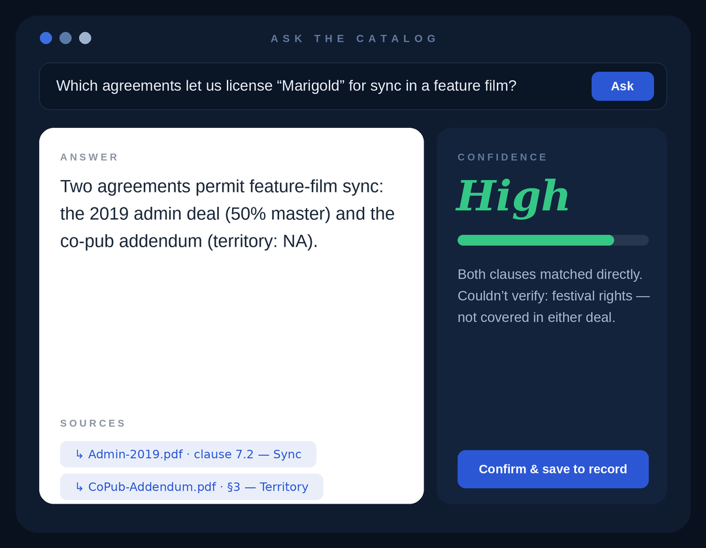

Find clarity in complexity.
Senior Product Designer making complex systems obvious. Fintech, identity, AI workflows, healthtech.
A decade making complex flows legible to the people who actually have to use them. Most recently at Trolley, leading Product Design and AI on LLM-based contract analysis, with an AI femtech product in the works on the side.
Recipient Portal
Redesigning how 4 million people get paid.
One scrollable widget, rebuilt end to end into a portal. Tax, identity, and payouts made legible for people who are not tax experts, across 210+ countries.
Case studyAsk the Catalog

Plain answers, tied to the source.
A reissue label's rights and royalty records sat in separate systems that didn't talk to each other. Ask a question in plain language and the tool retrieves across them, ties each answer to the exact contract clause or royalty line, scores its confidence, and waits for a person to sign off.
Case studyPath Finder
Turning “not eligible” into “not yet.”
A freemium tool matching 28M users to the right immigration route across 120+ programs, made approachable through self-serve instead of a binary verdict.
Case studySoundway
Digital experience and brand.
How listeners discover an archival catalogue across streaming, retail, and editorial, drawn from 11 listener interviews into a discovery strategy and brand direction.
Case studyI turn the flows that overwhelm people into experiences that feel effortless.
Senior product design for regulated, high-stakes systems, end to end: the research that sets direction, the strategy, and the screens. Fintech, identity, immigration, AI workflows, and now healthtech.
Before design, journalism and UN digital campaigns, where the job was knowing which story lands with which person and how to frame it so it moves them. That carries straight into product.
Data. I like living in the big numbers, finding the pattern nobody has named yet and turning it into something a team can act on. Accessibility is my north star throughout.